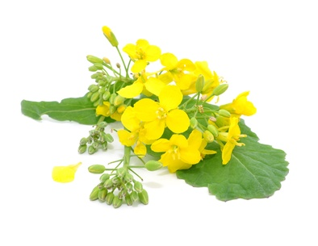

Canola (Brassica spp.)

Mating & Breeding System: Canola is actually a complex of three species in the mustard family, along with various hybrids, biotypes, and cultivars. The three species include B. rapa (formerly known as B. campestris; turnip rape, or canola), B. napus, and B. juncea (Indian brown mustard). All three species can readily hybridize with each other. Only B. rapa is believed to be fully self-incompatible, while B. napus and B. juncea will set seed readily in the absence of insects.
Most of the canola currently grown in Canada is spring canola, which is the self-compatible B. napus. Most production occurs in the prairie provinces, but there is still a considerable quantity cultivated in Ontario, particularly in the northwest of the province.
Although the canola industry is a major consumer of managed pollinator services in Canada, the crop’s pollination requirements are quite complex and are still not fully understood.
Pollination, Quality & Yield: Honey bees will increase yield substantially in some canola crops. Wild bees can also play a significant role, with greater yields and profitability positively related to the amount of wild bee habitat that is available in the area (e.g., pasture or wild habitat). No effect of insect pollinators on oil or protein content has been noted, but the potential for cross-pollination to improve seed quality (e.g., oil composition) has not been fully investigated.
Canola pollen can travel appreciable distances on the wind, and the relative role of wind and insects in pollination is not fully understood. In high density agricultural plantings, cultivars that normally require insect activity may receive sufficient cross-pollination from plants jostling against in each other in the field.
Pollination Recommendations: Canola flowers produce large quantities of concentrated nectar and pollen that is high in protein. It has excellent nutritional value for bees and can strengthening weak colonies and help them fight disease. Beekeepers must watch the hives carefully for overpopulation and swarming concerns. Canola makes an excellent honey plant, although honey made from canola crystallizes easily and may be difficult to remove from combs using conventional equipment.
Recommended stocking rates for honey bee hives vary widely. Some studies have found large increases in yield that justify 4 colonies per hectare, and as many as 15. Others found smaller improvements that warrant only 1 or 2.
Some producers growing self-compatible varieties find that the benefits of adding managed pollinators do not justify the added cost. These growers in particular may benefit from methods to encourage wild pollinators and the “free” pollination services they provide. There are a number of studies that suggest that any grower can benefit from wild pollinator conservation. However, care should be taken in extending the results of the more “experimental” studies (e.g., those using pollinator enclosures) to commodity production.
One study found that the blue orchard bee did an excellent job of pollinating canola in experimental plots, but this insect is likely not a viable option for large acreages due to availability and the high labour involved in its husbandry.
References
Canadian Honey Council http://www.honeycouncil.ca/index.php/honey_industry_overview
Davis, A.R., Pylatuik, J.D., Paradis, J.C., & Low, N.H. 1998. Nectar-carbohydrate production and composition vary in relation to nectary anatomy and location within individual flowers of several species of Brassicaceae. Plantae205:305-318.
Iqbal, M. C. M., Weerakoon, S. R., Geethanjalie, H. D. N., Peiris, P. K. D., & Weerasena, O. V. D. S. J. 2011. Changes in the fatty acids in seeds of interspecific hybrids between Brassica napus and Brassica juncea. Crop and Pasture Science 62:390-395.
Jauker, F. & Wolters, V. 2008. Hover flies are efficient pollinators of oilseed rape. Oecologia 156:819-823.
Kevan, P.G. 1988. Pollination, crops and bees. OMAFRA publication 72.
Kevan, P.G. & Eiskowitch, D. 1990. Self- and cross-pollination in canola (Brassica napus L. var. O.A.C. Triton) and its implication on seed germination. Euphytica 45:39-41.
Kevan, P.G., Lee, H., & Shuel, R. 1991b. Sugar ratios in nectar of varieties of canola (Brassica napus L.). Journal of Apicultural Research 30:99-102.
Langridge, D.F., & Goodman, R.D. 1975. A study on pollination of oilseed rape (Brassica campestris). Australian Journal of Experimental Agriculture and Animal Husbandry 15:285-288.
Manning, R. & Wallis, IR. 2005. Seed yields in canola (Brassica napus cv. Karoo) depend on the distance of plants from honeybee apiaries. Australian Journal of Experimental Agriculture 45:1307-1313.
Morandin, L.A. & Winston, M.L. 2005. Wild bee abundance and seed production in conventional, organic, and genetically modified canola. Ecological Applications 15:871-881.
Morandin, L.A. & Winston, M.L. 2006. Pollinators provide economic incentive to preserve natural land in agroecosystems. Agriculture, Ecosystems, & Environment 116:289-292.
Oz, M., Karasu, A., Cakmak, I., Goksoy, A. T., & Ozmen, N. 2008. Effect of honeybees pollination on seed setting, yield and quality characteristics of rapeseed (Brassica napus oleifera). Indian Journal of Agricultural Sciences 78:680-683.
Sabbahi, R., De Oliveira, D., & Marceau, J. 2005. Influence of honey bee (Hymenoptera: Apidae) density on the production of canola (Crucifera: Brassicacae). Journal of Economic Entomology 98:367-372.
Scott-Dupree, C.D., Winston, M., Hergert, G., Jay, S.C., Nelson, D., Gates, J., Termeer, B., & Otis, G. 1995. A guide to managing bees for crop pollination. Canadian Association of Professional Apiculturists, Aylesford NS.
Turnock, W.J., Kevan, P.G., Laverty, T.M., & Dumouchel, L. 2006. Abundance and species of bumble bees (Hymenoptera: Apoidea: Bombinae) in fields of canola, Brassica rapa L., in Manitoba: An 8-year record. Journal of the Entomological Society of Ontario 137:31-40.
Westcott, L. & Nelson, D. 2001. Canola pollination: an update. Bee World 82:115-129.